|
|
|
|
This file is a general outline to the contents that the Network Addon Mod has, and is intended for anyone and everyone to read. Note that this document is still in the process of transitioning to the new format introduced in NAM 36, and may contain some outdated information.
Some additional features, such as the RealHighways (RHW), Network Widening Mod (NWM), RealRailways (RRW), High Speed Rail Project (HSRP), Turn Lanes, and PedMalls are covered in the Feature Guides section of this documentation. |
|
|
|
| Fully functional Overpasses. The following additional Overpasses are now included with this mod.
Note: Unless specifically mentioned otherwise, all of these Overpasses only exist for the game when following the game’s square grid, & not against it. Road Overpasses Menu button contains the following overpasses:
OneWayRoad Overpasses Menu button contains the following overpasses: Note: OneWayRoad Overpasses now contain Directional Arrows & should be placed accordingly
Avenue Overpasses Menu button contains the following overpasses:
Other additional overpasses [Currently, there is no Menu Button for these. If the conditions are right, the game will build these ones automatically when using the applicable network tools to draw them]
More overpasses may [or may not] be added with future updates. To build these Overpasses etc, either select them from the Menu or just simply drag one network type over the other. If you don’t see a particular Overpass in the Menu, then use the Network tools to create them. For Example: build a stretch of Monorail track; then using the Elevated Rail Network tool, drag a long-enough stretch of Elevated Rail over the Monorail Network [like: ‘+’] and the Elevated Rail over Monorail overpass will build automatically if the conditions are right. With some of the Overpasses, especially where OneWayRoads are involved, it may be a little difficult sometimes to actually be able to build the overpass. So some patience, trial & error may be needed. Each of the different Menu Buttons for these overpasses works by using the HOME/END and TAB key(s) on your keyboard. HOME/END rotates the overpasses on the cursor [where possible], and TAB (&/or SHIFT+TAB) cycles through the different overpasses that belongs to that menu button. When you TAB from one overpass to another, the type of overpass is displayed in the TEXT on the cursor itself [where possible]. Overpasses come under the same scope as being Interchange-base Related Item(s). |
|
|
|
The following Custom Interchanges are now included with this mod: Custom Interchange(s) Includes the following Custom Interchanges:
There currently exist some Path issues with some of these interchanges. Unfortunately, for technical reasons some of these path issues are not possible to fix at all. Each of the different Custom Interchanges is currently contained in the one Menu Button in the Highway Menu. Use the HOME/END and TAB key(s) on your keyboard. HOME/END rotates the item on the cursor [where possible], and TAB (&/or SHIFT+TAB) cycles through the different items that belongs to that menu button. When you TAB from one item to another, the type is displayed in the TEXT on the cursor itself [where possible]. Interchanges come under the same scope as being Interchange-base Related Item(s). |
|
|
|
The following ramps are now included with this mod: Note: Unless mentioned otherwise; these ramps only exist for the game when following the game’s square grid, & not against it. Single-Sided Perpendicular Ramps Menu button contains the following ramps:
Single-Sided Parallel Ramps Menu button contains the following ramps: *All of these particular parallel ramps contain diagonal ramps*
** Note: Due to technical issues, these two Highway Exits don't function properly in some cases with the LHD plugin installed. The only way to fix this is to use the NAM Left Hand Drive Controller, installed as part of the NAM Left Hand Drive Plugin. Other Ramps [Currently, there is no Menu Button for this. If the conditions are right, the game will prompt you for these one(s)]
[If you have a UK version of the game, or left-hand side driving; then some of these Ramps above will be the opposite. i.e. OnRamp becomes OffRamp. OffRamp becomes OnRamp. Some of the names above have been done intentionally for a reason. They are all different types of Ramps, for now it was just figured the best way to deal with some of them was to name them in this particular manner for easier identifying in-game. This may change though]. Each of the different Menu Buttons for these ramps works by using the HOME/END and TAB key(s) on your keyboard. HOME/END rotates the item on the cursor [where possible], and TAB (&/or SHIFT+TAB) cycles through the different items that belongs to that menu button. When you TAB from one item to another, the type is displayed in the TEXT on the cursor itself [where possible]. Ramps come under the same scope as being Interchange-base Related Item(s). |
|
|
|
The following Puzzle Pieces are now included with this Mod:
Please note: Many Puzzle Piece items now contain a Diagonal component (where applicable) & cover many possible configurations, with either the lower &/or upper portion of the Puzzle Piece. Diagonal Street Helper Pieces Menu button contains the following FLEX and Puzzle Pieces:
Road Puzzle Pieces Menu button contains the following Puzzle Pieces:
OneWayRoad Puzzle Pieces Menu button contains the following Puzzle Pieces: Note: OneWayRoad Puzzle Pieces now contain Directional Arrows (where applicable) & should be placed & linked accordingly in order to work. To view these Directional Arrows after an item has been built, use either query tools &/or the bulldoze tool & hover the tool over applicable OneWayRoad Puzzle Pieces (one tile at a time only). Note that not all OneWayRoad Puzzle Piece items contain these Directional Arrows.
Avenue Puzzle Pieces Menu button contains the following Puzzle Pieces: Note: Avenue Filler Puzzle Pieces have specifically been provided for use in situations where the use of normal Avenue Puzzle Pieces may not be suitable or possible to use in a given situation. Note that some Avenue Filler Pieces contain Directional Arrows & should be placed accordingly in order to work.
Draggable Elevated Road Viaduct Pieces Menu button contains the following Starter and FLEX Pieces:
Wide Radius Road Curve Puzzle Pieces Menu button contains the following Puzzle Pieces:
Ground (Heavy) Rail Puzzle Pieces Menu button contains the following Puzzle Pieces:
Wide Radius Rail Curve Puzzle Pieces Menu button cotains the following Puzzle Pieces:
Ground Light Rail Puzzle Pieces Menu button contains the following Puzzle Pieces: This particular item has Transit Enabled Lots for them that are not included in this mod; please visit the NAM forum at SC4Devotion & look for the appropriate thread for more details.
Draggable Ground Light Rail Puzzle Pieces Menu button contains the following Puzzle Pieces:
Draggable Ground Light Rail Extension Puzzle Pieces Menu button contains the following Puzzle Pieces:
Double-height Elevated Rail Puzzle Pieces Menu button contains the following Puzzle Pieces:
Double-height Monorail Puzzle Pieces Menu button contains the following Puzzle Pieces:
Canal Addon Mod (CAN-AM) Puzzle Pieces Menu button contains the following Puzzle Pieces:
More puzzle pieces may [or may not] be added with future updates. Each of the different Menu Buttons for these Puzzle Pieces works by using the HOME/END and TAB key(s) on your keyboard. HOME/END rotates the Puzzle Piece on the cursor [where possible], and TAB (&/or SHIFT+TAB) cycles through the different Puzzle Pieces that belongs to that menu button item. When you TAB from one Puzzle Piece to another, the type of Puzzle Piece is displayed in the TEXT on the cursor itself [where possible]. Puzzle Pieces must be built manually from the Menu. So what are Puzzle Pieces? (Please note: That there are some exceptions to the following section. Typical Puzzle Piece placement rules as described & depicted further below do not apply to every single Puzzle Piece item. Some Puzzle Piece based items may differ slightly in their placement &/or use due to their design. The following section is only meant as a guide.) Puzzle Pieces are essentially like jigsaw puzzles; many smaller pieces making up a bigger picture. Puzzle Pieces came about as a result of Overpasses, from the previous section. With Overpasses you are restricted to having an Overpass at a set length, with the overpass only passing over one network. With using Puzzle Pieces though this set length can be overcome; and you can now build extended Overpasses [extended overpasses must be built manually using the Puzzle Pieces]. You can also have two or more networks, whether they’re the same or not, going underneath extended overpass(es); these too must be built manually using the Puzzle Pieces. Puzzle Pieces now also have raised intersections, which should increase their flexibility even more. Puzzle Pieces can typically be placed on uneven &/or unlevel terrain; including placing Puzzle Pieces next to each other on uneven/unlevel terrain. The more level the terrain is though, the less the Puzzle Piece Model has to conform to the terrain, thus giving a much better visual look. This also includes being able to place Puzzle Pieces on water (any Puzzle Pieces placed on water will still function properly & carry commuters, as long as everything is linked up properly). Note: That this is by design that this is possible. Intersection-Based Puzzle Pieces: Where there exists Intersection Puzzle Pieces like “Road x Road/OneWayRoad”, this is an Intersection Puzzle Piece aimed at and primarily for Road + Intersection, but is compatible & will work with OneWayRoad Puzzle Piece connections. Where there exists Intersection Puzzle Pieces like “Avenue x Road/OneWayRoad”, this is an Intersection Puzzle Piece primarily for Avenue intersection, and is aimed for use with Road &/or OneWayRoad Puzzle Piece connections. In other words, these intersection-based puzzle pieces are flexible. Because of this flexibility though, some minor oddities may occur (please see Technical Notes for more details regarding path oddities). How To Use Puzzle Pieces? Most Puzzle Pieces had to be made in a very particular way. For this reason some people may have a little trouble using them sometimes. There is a particular method in which Puzzle Pieces must generally be used, otherwise they may not function properly as intended. Puzzle Pieces that have a dual network, for example Road over Road Puzzle Piece &/or Road over Avenue Puzzle Piece, must typically be placed on top of an existing section of the network in order to implement and use them in the game properly. This is something that may take some practice, a little patience, and some trial and error to do. Auto-Resolving & how it can help Because some Puzzle Piece network buttons, especially OneWayRoad Puzzle Piece menu button, contain numerous items on the Home/End keys, trying to find the item you want for a given situation can be impractical. Auto-Resolving helps overcome this impracticality (thanks to Maxis!). Auto-resolving occurs when hovering the cursor of an interchange-based related item, such as Puzzle Pieces or interchange items, over existing sections of (non-reserved) network & Tabbing &/or Cycling through the different items attached to an Interchange-Based Related Menu Button. The game will automatically resolve only appropriate possible items for a given network in a given situation, when pressing the Tab &/or Home/End keyboard keys. Puzzle Pieces involving a two-tiled network, such as avenue & ground highway, may require the cursor be moved across the two-tiled area of the network when using the Home/End keys to access any/all of the possible configurations an item contains. There are some exceptions to this Auto-Resolving ability for some items, which typically depends on an items internal design. If in doubt, please experiment. Diagonal-Based Puzzle Pieces Many of the Network Puzzle Piece Menu Buttons &/or items now contain their Diagonal equivalent. In order to access Diagonal Puzzle Pieces, select a Puzzle Piece menu item & use the Home/End keyboard keys to rotate an item (where applicable). Note that not all items contain a Diagonal equivalent. The same “How To Use” principles described above & depicted below apply to Diagonal-Based Puzzle Pieces, as they do with normal (straight-based) Puzzle Pieces. Diagonal-Based Puzzle Pieces though may take a little bit more practice, patience, and trial and error to fully utilise. Please note that all of the Diagonal-Based Puzzle Pieces have specifically been made the way they are for a reason - their (unorthodox) design makes them much more interchangeable with each other & all the rest of the puzzle pieces, thus making them much more versatile. The following tries to illustrate how Puzzle Pieces must be used in order for them to work properly as intended: 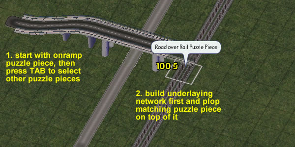 You must have 3 Tiles of Street laid down already before you build the Road over Street Puzzle Piece. It must be done like this. With Puzzle Pieces that are 1x2, 2x1, or 2x2 etc tiles, the arrangement & set-up may be a little different but the same principles as this apply. OneWayRoad Puzzle Pieces: How to use? Because OneWayRoad Puzzle Pieces flow of traffic only travels in any one direction, using them is a little different from other Puzzle Pieces. The same principles above apply to OneWayRoad Puzzle Pieces. The only difference is the Starting & Ending Pieces. If you use “OneWayRoad Starting Piece - ON” on one end of an extended overpass, you must use “OneWayRoad Ending Piece - OFF” on the other end of the extended overpass. Many of the OneWayRoad Puzzle Pieces now contain Directional Arrows to assist with their placement & general use. OneWayRoad Puzzle Pieces should be placed & linked together according to these Directional Arrows, where applicable, in order for them to work & function properly. Fail to do so may result with whole sections of raised OneWayRoad Puzzle Pieces not working properly at all. The following gives an example illustration on how this should be done with OneWayRoad Puzzle Pieces in order for them to work properly as intended: 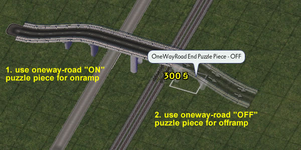 GLR Puzzle Pieces: How to use? Ground Light Rail (GLR) Puzzle Pieces are basically Elevated Rail tracks on ground level. Use the Elevated to Ground Light Rail transition to connect both. It is recommended that you use Draggable GLR instead of GLR Puzzle Pieces whenever possible. Since the NAM doesn't contain lots, you have to install GLR stations separately. vester_DK has created a list of all available GLR stations in the Simtropolis forums. 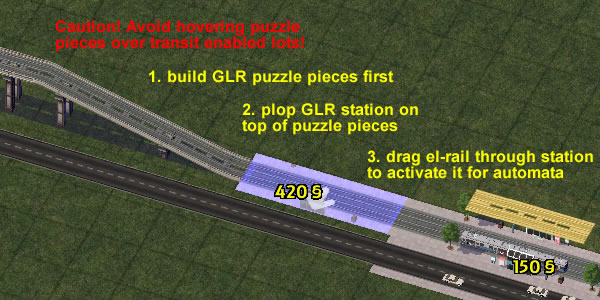 Draggable GLR: How to use it? Draggable
GLR can be used similar like the in-game network tools. You have to
place a special starter puzzle piece first that will indicate the
direction of the draggable GLR. Use the in-game el-rail tool for
dragging GLR tracks. Please note: Due to certain
restrictions, the preview still shows up in the same height as the
el-rail tracks. At the moment, this cannot be changed. With draggable
GLR, you have almost the same liberties as with any other draggable
network. For some special cases it's still necessary to use puzzle
pieces, though, such as a GLR x El-Rail intersection. 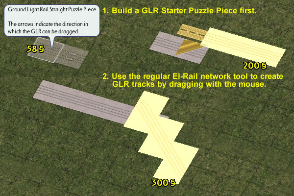 Limitations Puzzle Pieces currently have some limitations &/or known issues with them, and are as follows: The Data View Map Congestions & Data View Map Volume Traffic Overlays do not always appear fully on all the different Puzzle Pieces (there is a reason for this). They will still show up in the Data View Map itself though. Puzzle Pieces come under the same scope as being Interchange-base Related Item(s). |
|
|
|
The following Dual/Double-Decker Networking pieces are now included with this mod:
Flexible Underpass Puzzle Pieces Menu button contains the following Puzzle Pieces:
Elevated Rail Dual/Double-Decker Networking Menu button contains the following Pieces:
Underground Rail Dual Networking Puzzle Pieces Menu button contains the following Pieces:
Underground Rail/Maxis Roadways Interface Puzzle Pieces Menu button contains the following Pieces:
Underground Rail/ Railways Interface Puzzle Pieces Menu button contains the following Pieces:
Underground Rail/PedMall Dual Networking Puzzle Pieces Menu button contains the following Pieces:
Underground Rail/Tramways Crossing Puzzle Pieces Menu button contains the following Pieces:
Underground Rail/Miscellaneous Puzzle Pieces Menu button contains the following Pieces:
Underground Tram Underpass Dual Networking Puzzle Pieces Menu button contains the following pieces:
Ground Light Rail/Avenue (Tram-Avenue) Dual Networking Puzzle Pieces Menu button contains the following Pieces:
Note: The word "Tram" is equivalent to "Ground Light Rail" and "GLR".
Note: The word "Tram" is equivalent to "Ground Light Rail" and "GLR".
Note: The word "Tram" is equivalent to "Ground Light Rail" and "GLR".
Note: The word "Tram" is equivalent to "Ground Light Rail" and "GLR". Tram-on-Street uses Cobblestone by default.
The above Dual/Double-Decker Network Pieces works by using the HOME/END and TAB key(s) on your keyboard. HOME/END rotates the Piece on the cursor [where possible], and TAB cycles through the different Pieces that belongs to that menu button. When you TAB from one Piece to another, the type of Piece is displayed in the TEXT on the cursor itself [where possible]. What is Dual/Double-Decker Networking? Dual/Double-Decker Networking is similar to Puzzle Pieces, essentially allowing Two Networks to run parallel one on top of the other along the same stretch of tile(s), simultaneously, allowing more than one form of Transport to use the same stretch of tile(s) at the same time for commuting purposes. Note: When using this item in front of zones, it is best if an area is zoned first before laying this item down, otherwise the zones may not face the direction you want. If in doubt, please experiment. Limitations The limitations for Dual/Double-Decker Network Pieces is the same as per Puzzle Pieces above. Dual/Double-Decker Network Pieces come under the same scope as being Interchange-base Related Item(s). |
|
|
|
U-Drive-It (UDI) for Elevated Rail (EI Rail) has now been included with this mod. Currently, only “Free Drive Mode” is available for Elevated Rail Train/Station. Where to find? UDI for EI Rail is located under the “U Drive It” Panel, in the “Earned Land Vehicles” menu, half-way down the menu just before the Menu Icon for Monorail UDI. How to use? In order to use UDI EI Rail, you need to build an Elevated Rail Train Station. This will be the case regardless for a new city or an existing city. In other words; even in existing cities where there are already *existing* Elevated Rail Train Stations, you will still need to build an Elevated Rail Train station in order to be able to access UDI for EI Rail. If in doubt, please experiment. Currently; UDI for EI Rail is not intended for use on “EI Rail-to-subway transitions”. Unfortunately, the game may still try to start UDI for EI Rail from an “EI Rail-to-subway transitions”. This side-affect is by design that this occurs. UDI -cross platforms With the advent of UDI for EI Rail, it should now be possible to take a UDI passenger train &/or UDI freight train, onto EI Rail via a custom made Transit Enabled Lot connecting ground rail to EI Rail. It should also now be possible to take a UDI EI Train onto ground rail via the same method. Just so long as the Custom Transit Enabled Lot has been made properly & with proper custom paths. For more information regarding UDI EI Rail, please see the Technical Notes. |
|
|
|
This section lists Intersections, Junctions, &/or Network possibility types that have been made possible &/or are included in this mod &/or have had adjustments/fixes applied to them. All of the intersections, junctions &/or network possibility types in this section are achieved in-game using the standard Network tools, where applicable. i.e. Highway Tools, Avenue Tool, Road Tool, & so on. Note: This list is not all inclusive & should only be considered as a guideline. Due to the multitude of items for this section, some items may exist that are currently not listed here or are not known, & as such this list may change. If in doubt, please experiment. Some known/unknown drawing, pathing &/or UDI issues may also exist with some items listed in this section. Legend
The lists below are broken into two main Groups & items are listed by Network Set(s) according to Network Hierarchy, from lowest to highest (approximately). Group One involves only one network that have had additional intersections/etc items added for them i.e. no other networks are involved. Group Two is where more than one network is involved. Group One Items in this section only involve one network. The items in this group are not in any particular or specific format. Street
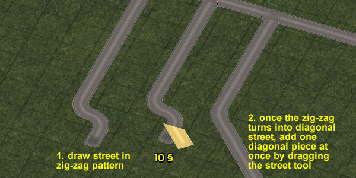
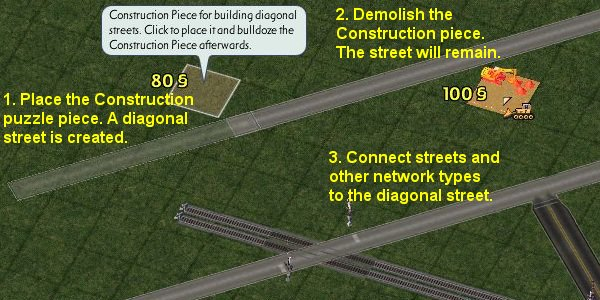 Road
OneWayRoad
Avenue The Avenue Tool/Network has been significantly modified, is much more flexible & now contains well over an additional 35+ new intersections, junctions &/or set-up possibility types. Some that we may not even be aware of yet. The listings for this section is to primarily give users an idea of what kind of junctions are now possible, as there may exist various different kinds of set-ups for a given listing. So if in doubt, please experiment. Note: Due to the complexity involved & the associated paths used for the many junctions added for the avenue network, it is strongly recommended that using any vehicles during UDI Mode not be “Snapped” to the network if attempting to travel through any of these new avenue junctions.
Rail
GroundHighway
ElevatedHighway
ElevatedRail
MonoRail
Group Two Items in this section involve more than one network. Items in this group follow a particular guideline format & are as follows:
Road <> Street
OneWayRoad <> Street
OneWayRoad <> Road
Avenue <> Street
Avenue <> Road
Avenue <> OneWayRoad
Rail <> Street
Rail <> Road
Rail <> OneWayRoad
Rail <> Avenue
GroundHighway <> OneWayRoad
ElevatedHighway <> Street
ElevatedHighway <> Road
ElevatedHighway <> OneWayRoad
ElevatedHighway <> Avenue
ElevatedHighway <> Rail
ElevatedHighway <> GroundHighway
ElevatedRail <> Street
ElevatedRail <> Road
ElevatedRail <> OneWayRoad
ElevatedRail <> Avenue
ElevatedRail <> Rail
ElevatedRail <> GroundHighway
MonoRail <> Street
MonoRail <> Road
MonoRail <> OneWayRoad
MonoRail <> Avenue
MonoRail <> Rail
MonoRail <> GroundHighway
Diagonal Streets Various new intersections between diagonal streets and other network types have been added. Note: for any junction or intersection involving onewayroad: the onewayroad tool must be drawn properly in the correct direction in relation to any adjoining networks. If in doubt, please experiment. |
|
|
|
| Since the release of NAM 31 in 2013, Pattern-Based Draggable options have been available for Wide-Radius Curves for the Road
and Street networks, as well as for the Fractional Angle functionality of the Road network. The patterns for these features are shown below. The pattern is shown on the left,
and the result is shown on the right. 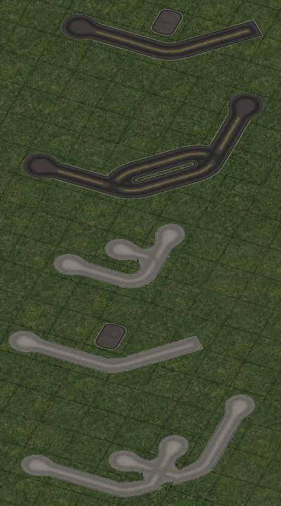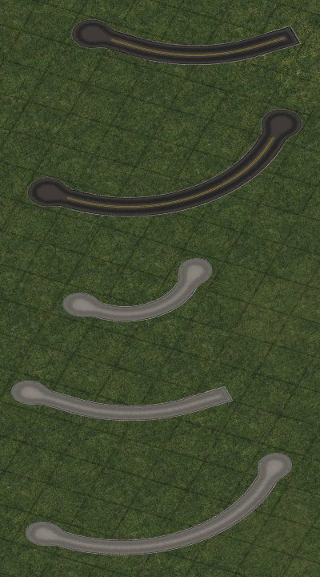 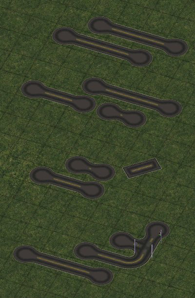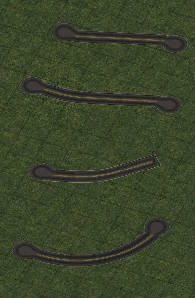 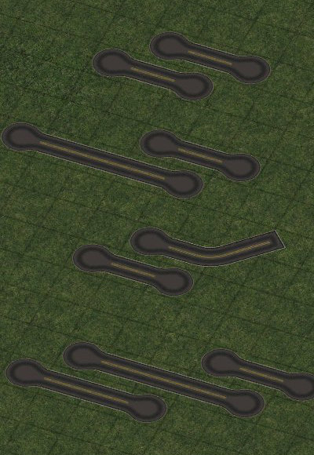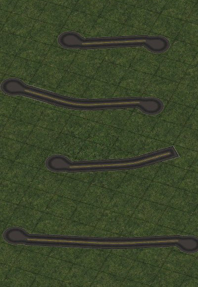 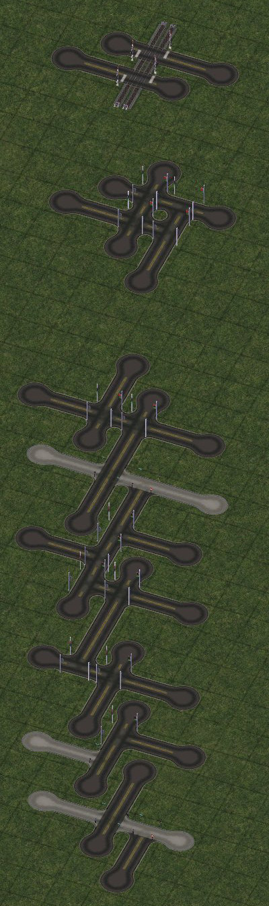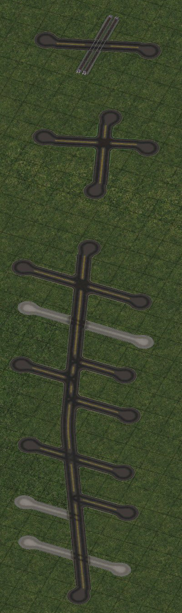 
FAR Patterns 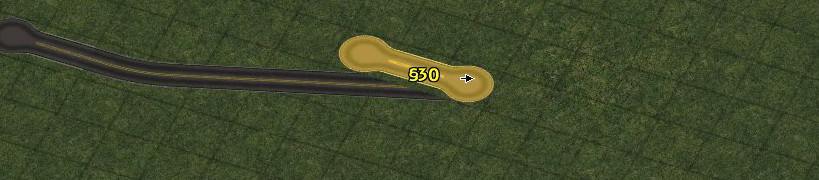 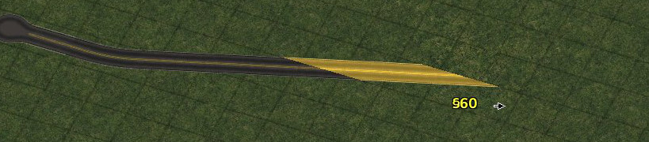 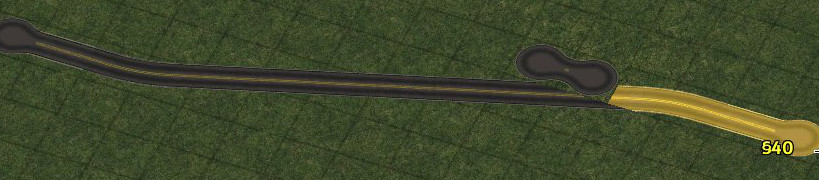 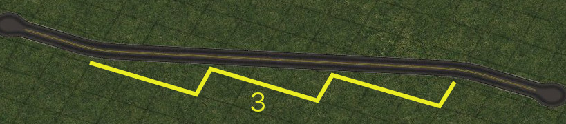 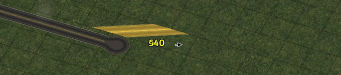 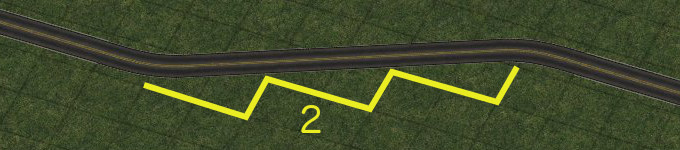 |
|
|
|
This
mod contains any & all known Transit Bugfixes made to date where
possible, practical &/or applicable. For a list of included Transit
Bugfixes &/or other added items included with this Network Addon
Mod, please consult the History in conjunction with the above. |